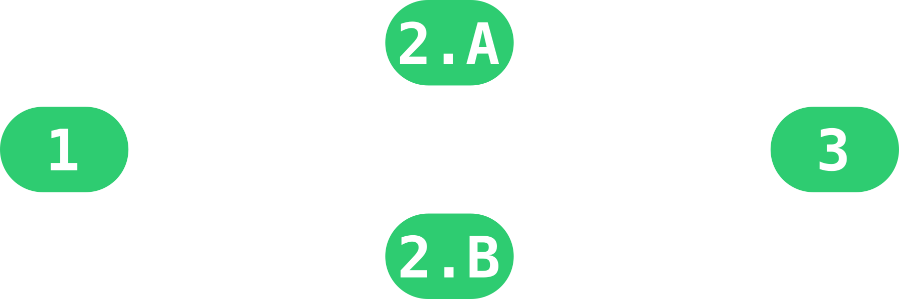
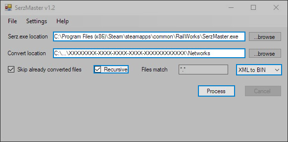
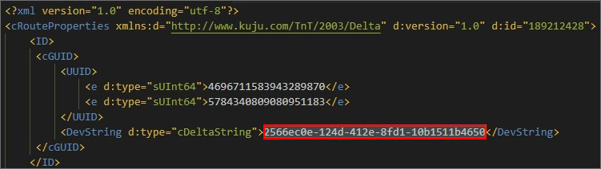

Qu'est-ce que c'est ?
C'est un programme en ligne qui permet d'importer des lignes ferroviaires (françaises) dans le jeu Train Simulator à l'aide d'une base de données SNCF.
Cela permet d'obtenir un itinéraire qui contient (uniquement) les voies ferrées d'une ou plusieurs lignes que l'on choisit. Cela évite d'avoir à les placer manuellement dans l'éditeur du jeu.
Comment l'utiliser ?
Pour utiliser le programme, il suffit de remplir le formulaire ci-dessous.

| 1Préciser les propriétés de l'itinéraire. | 2Choisir la zone d'intérêt : .Aune/plusieurs ligne(s) dans la liste OU .Bune zone rectangulaire (coordonnées géodésiques). |
3Préciser les propriétés de la voie |
Le modèle (template) d'itinéraire, la voie et la règle de voie doivent être présents dans vos fichiers locaux du jeu. (Créez un itinéraire et importez tous les produits présents dans vos fichiers locaux pour choisir et trouver le nom exact de la voie et de la règle de voie.)
Lorsque tout est complété, exécutez le programme.
Les développeurs ne sont pas responsables de quelconques problèmes pouvant survenir sur le jeu, liés à l'utilisation du présent programme.
Une sauvegarde des fichiers du jeu est recommandée.
Installation
Les instructions d'installation sont aussi disponibles sur la page de téléchargement de l'itinéraire.
Après avoir téléchargé le dossier, décompressez-le puis ouvrez le programme SerzMaster.exe (qui devrait se trouver ici :).
Précisez le chemin de cet exécutable ainsi que le chemin du dossier de l'itinéraire suivi de . Assurez-vous que est coché et que la conversion soit de XML à BIN.

Puis cliquez sur . Lorsque l'opération est complété supprimez tous les fichiers .xml dans le dossier Networks ainsi que Networks\Track Tiles.
Pour finir placez l'itinéraire dans le répertoire suivant :
Ne remplacez pas le dossier, changez le nom de l'itinéraire que vous venez de télécharger. Puis éditer le fichier 
Si un itinéraire de ce nom existe déjà
RouteProperties.xml (à l'intérieur du dossier de l'itinéraire) en remplaçant la valeur de la balise <DevString> par le nouveau nom de l'itinéraire.
Outils utilisés
| Le tutoriel Understanding tracks.bin provenant du site coda del treno a été très utiles pour comprendre la structure du fichier |
| La carte permettant de trouver le nom d'une ligne a été créer avec Mapbox. |